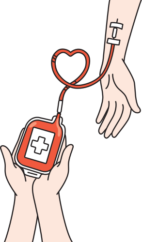
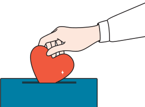
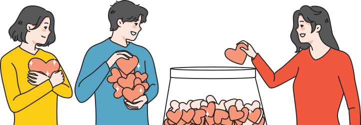
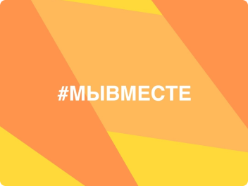
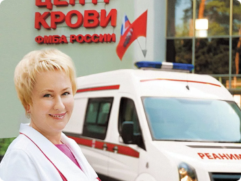
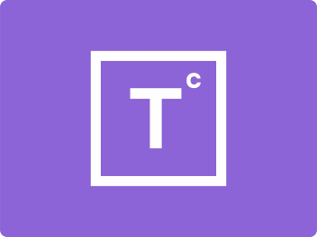
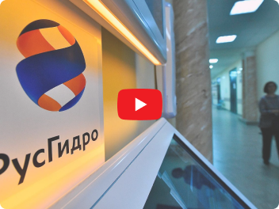
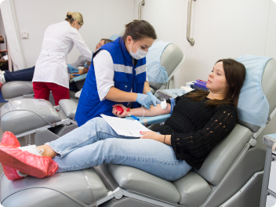
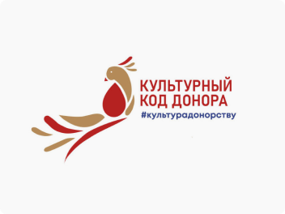

Подари надежду на завтра –
стань донором!
Принимаем доноров без предварительной записи
 Стать донором
Стать донором

Как стать
донором?
Подробнее

Советы
донорам
Подробнее
Кодекс
донора
Подробнее
Донорский светофор
0 (I)
Rh+
Rh-
A (II)
Rh+
Rh-
B (III)
Rh+
Rh-
AB (IV)
Rh+
Rh-
Достаточный запас крови данной группы
Присутствует потребность в крови данной группы
Повышенная потребность в крови данной группы
Нет экстренной потребности
Корпоративное
донорство
Узнать больше
1567
Совершено донаций
в Центре крови
в Центре крови
42
Проведено выездных
донорских акций
донорских акций
322
Награждено Почетных доноров
России в Центре крови
России в Центре крови
Данные за 2023 год

Новости

01.11.2022
324
Присоединяйтесь к штабу акции помощи семьям военнослужащих

01.11.2022
324
Режим работы Центра крови ФМБА России в ноябре

01.11.2022
324
День донора состоялся на «Территории смыслов-2022»

01.11.2022
324
В РусГидро прошла традиционная донорская акция

01.11.2022
324
Центр крови ФМБА России первый день донора для сотрудников ЦПК

01.11.2022
324
День донора – в сердце Москвы: донорская акция прошла на выставке...
Часто задаваемые вопросы
Как часто можно сдавать кровь и её компоненты?
Существуют разные виды донорства – донорство цельной крови и донорство компонентов. Мужчины могут сдавать цельную кровь не более 5 раз в год, женщины – не более 4 раз в год. После сдачи крови должно пройти не менее 60 дней, прежде чем донор сможет снова сдавать кровь. После сдачи крови должно пройти не менее 30 дней, прежде чем донор сможет сдавать плазму. После сдачи плазмы должно пройти не менее 14 дней, прежде чем донор сможет снова сдавать плазму или кровь.
В связи с тем, что банк плазмы нашего учреждения переполнен, врачи-трансфузиологи просят доноров плазмы соблюдать интервал между донациями не менее 1 месяца.
Чем сдача крови отличается от сдачи плазмы?
Существуют разные виды донорства – донорство цельной крови и донорство компонентов. Мужчины могут сдавать цельную кровь не более 5 раз в год, женщины – не более 4 раз в год. После сдачи крови должно пройти не менее 60 дней, прежде чем донор сможет снова сдавать кровь. После сдачи крови должно пройти не менее 30 дней, прежде чем донор сможет сдавать плазму. После сдачи плазмы должно пройти не менее 14 дней, прежде чем донор сможет снова сдавать плазму или кровь.
В связи с тем, что банк плазмы нашего учреждения переполнен, врачи-трансфузиологи просят доноров плазмы соблюдать интервал между донациями не менее 1 месяца.
Можно ли прийти прийти в учреждение службы крови без паспорта?
Существуют разные виды донорства – донорство цельной крови и донорство компонентов. Мужчины могут сдавать цельную кровь не более 5 раз в год, женщины – не более 4 раз в год. После сдачи крови должно пройти не менее 60 дней, прежде чем донор сможет снова сдавать кровь. После сдачи крови должно пройти не менее 30 дней, прежде чем донор сможет сдавать плазму. После сдачи плазмы должно пройти не менее 14 дней, прежде чем донор сможет снова сдавать плазму или кровь.
В связи с тем, что банк плазмы нашего учреждения переполнен, врачи-трансфузиологи просят доноров плазмы соблюдать интервал между донациями не менее 1 месяца.
Может ли курильщик быть донором?
Существуют разные виды донорства – донорство цельной крови и донорство компонентов. Мужчины могут сдавать цельную кровь не более 5 раз в год, женщины – не более 4 раз в год. После сдачи крови должно пройти не менее 60 дней, прежде чем донор сможет снова сдавать кровь. После сдачи крови должно пройти не менее 30 дней, прежде чем донор сможет сдавать плазму. После сдачи плазмы должно пройти не менее 14 дней, прежде чем донор сможет снова сдавать плазму или кровь.
В связи с тем, что банк плазмы нашего учреждения переполнен, врачи-трансфузиологи просят доноров плазмы соблюдать интервал между донациями не менее 1 месяца.
Как восстановить организм после сдачи крови?
Существуют разные виды донорства – донорство цельной крови и донорство компонентов. Мужчины могут сдавать цельную кровь не более 5 раз в год, женщины – не более 4 раз в год. После сдачи крови должно пройти не менее 60 дней, прежде чем донор сможет снова сдавать кровь. После сдачи крови должно пройти не менее 30 дней, прежде чем донор сможет сдавать плазму. После сдачи плазмы должно пройти не менее 14 дней, прежде чем донор сможет снова сдавать плазму или кровь.
В связи с тем, что банк плазмы нашего учреждения переполнен, врачи-трансфузиологи просят доноров плазмы соблюдать интервал между донациями не менее 1 месяца.